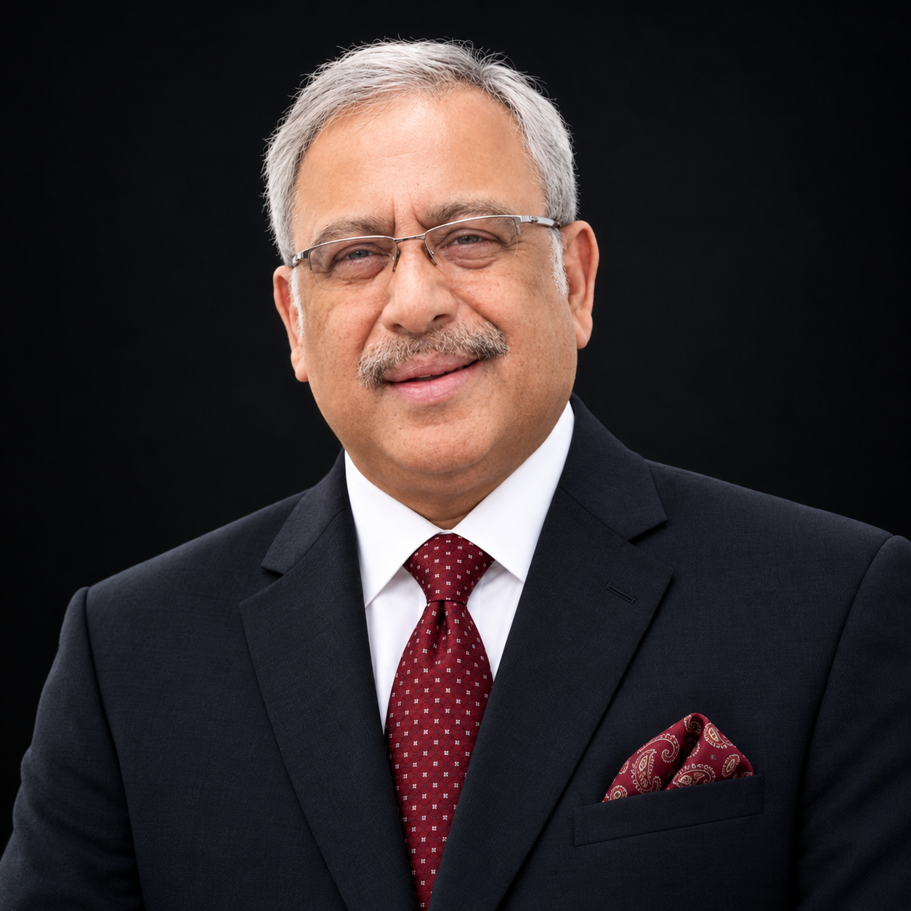

Curated profiles of the Circle's Mentor Members, published with their consent, in recognition of the standards they hold the Circle to.

Twenty-eight years of building experiences.
Hemant Kapoor brings twenty-eight years of experience in travel & tourism and event management to The Calcutta Connoisseurs Circle — a career built on curating journeys, orchestrating gatherings, and understanding, better than most, what makes an experience truly memorable.
As Co-Founder and Custodian of the Circle, he is the steward of its calendar and its conduct.
.jpeg)
Thirty-three years of quiet partnership.
For thirty-three years, Sudipa Mitter has been the steady hand behind the scenes. As Co-Founder and Custodian of the Circle, she brings the instincts of a lifetime spent making people feel welcome — a homemaker's eye for detail, and a host's heart for hospitality. It is this quiet strength, long the foundation of a shared life, that now helps hold the Circle together.

Thirty-six years at the table.
P. P. K. Mitter has spent thirty-six years immersed in the alcoholic beverage and wine industry — years spent learning labels, understanding palates, and building judgment. He is WSET Level 2 certified, and a founding member of the Calcutta Wine Club. As Chief Mentor, he brings that same spirit of discernment to a new generation.

Abhay Kewadkar is one of India's pioneering winemakers and a highly respected alcobev consultant, wine expert, and microbrewery specialist. With decades of industry experience, he has played a significant role in shaping India's evolving alcoholic beverage landscape.
Formerly Executive Director and Chief Winemaker at Four Seasons Wines Ltd. (United Spirits–Diageo Group), he was instrumental in creating award-winning wines that earned global recognition for India.
Today, as Co-Founder and Director of Tetrad Global Beverages Pvt. Ltd., he advises wineries, breweries, distilleries, hospitality brands, and investors on beverage innovation, brand development, quality enhancement, business growth, and turnkey projects across the alcobev industry.

An accomplished entrepreneur, industry leader and passionate connoisseur of fine experiences, Ashok Kumar Chandak brings decades of leadership and community engagement to The Calcutta Connoisseurs Circle. He is Director of Makarni Infrastructure Pvt. Ltd. and Partner at Organic Dairy Foods India. He is married to Manju Chandak and is blessed with two children. He has held several distinguished leadership positions, including President of Rotary Club Durgapur Central, President of Durgapur Tennis Club, State Chairman of the Builders’ Association of India, West Bengal, and Vice President East of BAI. He is also a Paul Harris Fellow (PHF +3). A lifelong enthusiast of tennis, motoring, wine and gastronomy, he founded the Wine Club Durgapur. Known for his warmth, curiosity and ability to bring people together, Ashok Chandak embodies the spirit of connoisseurship, camaraderie and meaningful connections.

Nayana Gangooly has over 30 years’ experience in curating the finest Indian textiles and encouraging local crafts people and artisans to showcase their wares. She is also deeply committed to Calcutta, its heritage, culture, history and vibrancy. For the past several years, she has immersed herself in the historical and architectural idiosyncrasies of the city, using her own ancestry, her wide range of connections and her immense interest in the subject to become an established Calcutta host. She is someone who feels and describes one of India's most fascinating and soulful cities with passion, eloquence and knowledge.
Alongside her interest in the city's wine, jazz and other cultural and social activities, she runs her own Homestay in the famous University town of Santiniketan. Nayana makes Calcutta a personal experience for those who go on her tours, showing them aspects of the city that take them beyond the obvious and the surface.

Abhik Roy co-founded Andre Garcia, a cigar and cigar-case brand he built with his brother Anindya Roy out of a Kolkata factory over two decades. His interest in the trade began in the late 1990s as a curiosity-driven deep dive into the market, despite not being a smoker himself. Under his direction, Andre Garcia reengineered the traditional cigar case. Instead of the soft leather favoured by legacy European houses, the brand lines its cases with Spanish cedar, sourced from Brazil and spliced in Arkansas for its natural resistance to tobacco-damaging insects, and crowns each case with a buffalo-horn cap. Roy holds an Indian patent for this design and manufacturing technique. The cases combine imported materials, including Bavarian bull hide, carbon fibre and Italian leather, with hand assembly by Indian artisans, a craft Roy insists machines cannot replicate. Collections include the portable Pack and Go and the telescopic Saint James. In 2007, Roy expanded into cigars, making Andre Garcia the first company to make Cigar for India in a century to do so.
.png)
Sudhir Ahuja is a hotelier, restaurateur and brand builder guided by one belief: logic takes you from A to B, but creativity and imagination take you everywhere. An MBA in Marketing & Research from S.P. Jain Institute of Management & Research, Mumbai, he chose to build his own identity outside the family's children's garments business. He designed tees for Lawman, Killer and Spykar before running his own menswear label for eight years.
He then founded Bakstage, one of Kolkata's longest-running pubs (14 years and counting), added a microbrewery, and in 2020 opened Beyzaa, a 60-room four-star boutique hotel now ranked 2nd of 444 Kolkata hotels on TripAdvisor.
A former Chairman of Round Table Kolkata and former head of Brand & Marcom for NRAI Kolkata, he is an honorary member of the Della Leader's Club and was named among T2's five most stylish Foodpreneurs of Kolkata. Off duty, he treks every year, has completed 20+ half marathons and two full marathons, and trains daily.

An alumnus of Don Bosco Calcutta, St Xavier's College, Calcutta, and the Xavier Institute of Communications, Gautam Banerjee brings more than three and a half decades of distinguished experience in brand building and communications.
He has held leadership roles with some of the country's most respected corporates, in India and abroad, shaping brand narratives with clarity, discipline, and an instinct for what resonates with discerning audiences.
A WSET Level 2 certified wine and spirits enthusiast, he has also completed the Whisky Ambassador Programme and the Tea Connoisseurs Programme, a palate that spans the grape, the grain, and the leaf.
In pursuit of excellence, and with an endearing passion for Down Under wines, he has travelled across New Zealand and Australia for years, touring the Yarra Valley in Melbourne and the vineyards of Waiheke Island off the Auckland coast. Closer home, his visits to Nashik and Goa have deepened his understanding of how domestic brands are evolving.
.png)
Surajit Kundu is a corporate leader with 28 years of experience across Sales, Marketing, Business Leadership and People Management, followed by 10 years managing a Financial Advisory business in Kolkata.
His career has been built around people: leading teams, developing talent, building lasting relationships and engaging with diverse stakeholders.
Over nearly four decades, his work has centred on understanding what motivates people and helping them succeed. A firm believer in the power of relationships, communication and perspective, Surajit brings deep experience in networking, public relations and people management. He values listening first and communicating with clarity and empathy, strengths that define his approach to leadership and mentoring.

A graduate of Scottish Church College, Kolkata, and an alumnus of Denobili School, Digwadih, Dhanbad, he brings a rare blend of academic grounding and decades of hands-on business experience.
For forty years he has been a respected name in the printing industry, building a reputation for quality, reliability and trust. Over the course of his career he has served nearly every major telecom company in Kolkata, as well as almost all the leading liquor companies across Eastern India, earning enduring relationships that reflect his professionalism and commitment to client satisfaction.
Now in a well-earned retirement, he devotes his time to the things he enjoys most. An avid reader across all genres, he is equally passionate about music and travel, always eager to discover new stories, sounds and destinations.
He is happily married to Tina Mukherjee, and the couple is blessed with a son. Warm, well-networked and widely respected, he remains a valued presence in every circle he joins.
A brief introduction to the mentor's background, expertise, and their contributions to the Circle's tasting calendar.

.jpeg)